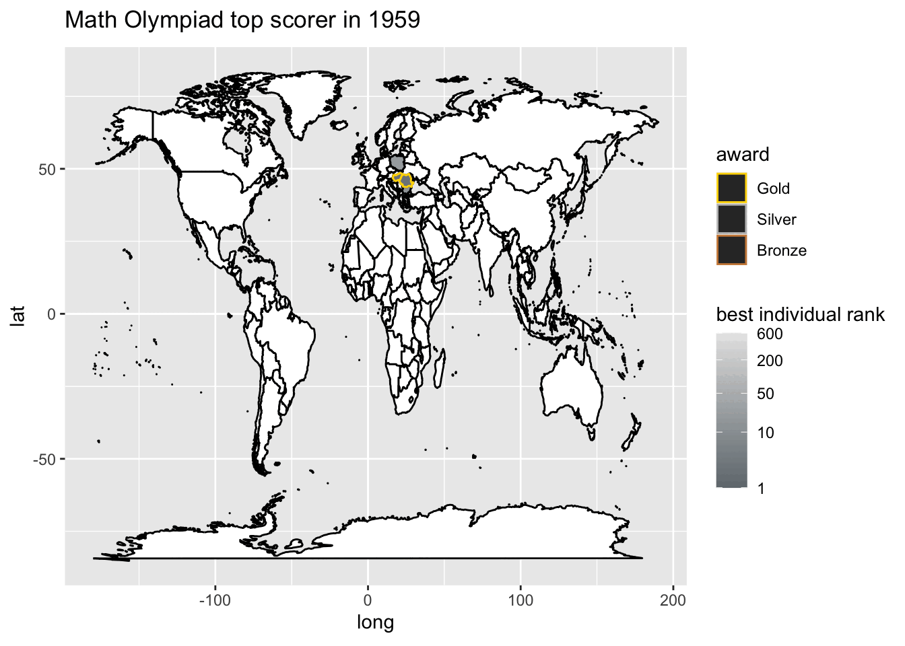

library(tidyverse) # ggplot, lubridate, dplyr, stringr, readr...
library(praise)
library(maps)
library(gganimate)International Mathematics Olympiad
The Data
The data for this week comes from International Mathematical Olympiad (IMO). Thank you to Havisha Khurana for curating this week’s dataset.
The International Mathematical Olympiad (IMO) is the World Championship Mathematics Competition for High School students and is held annually in a different country. The first IMO was held in 1959 in Romania, with 7 countries participating. It has gradually expanded to over 100 countries from 5 continents. The competition consists of 6 problems and is held over two consecutive days with 3 problems each.
country_results_df <- readr::read_csv('https://raw.githubusercontent.com/rfordatascience/tidytuesday/master/data/2024/2024-09-24/country_results_df.csv')
individual_results_df <- readr::read_csv('https://raw.githubusercontent.com/rfordatascience/tidytuesday/master/data/2024/2024-09-24/individual_results_df.csv')
timeline_df <- readr::read_csv('https://raw.githubusercontent.com/rfordatascience/tidytuesday/master/data/2024/2024-09-24/timeline_df.csv')In 2024, there were 609 people competing from 109 different countries.
indiv_country <- individual_results_df |>
mutate(country2 = ifelse(str_detect(country, "C[0-9]"), "Russia", country))
indiv_country |>
filter(year == 2024) |>
summarise(distinct_countries = n_distinct(country2), n_countries = n())# A tibble: 1 × 2
distinct_countries n_countries
<int> <int>
1 109 609indiv_country <- indiv_country |>
group_by(country2, year) |>
arrange(individual_rank) |>
slice_head(n = 1) |>
arrange(desc(year)) |>
select(year, country2, individual_rank, award) |>
mutate(country3 = case_when(
country2 == "United States of America" ~ "USA",
country2 == "People's Republic of China" ~ "China",
country2 == "Türkiye" ~ "Turkey",
country2 == "Islamic Republic of Iran" ~ "Iran",
country2 == "Republic of Korea" ~ "South Korea",
country2 == "Islamic Republic of Iran" ~ "Iran",
country2 == "Turkish Republic of Northern Cyprus" ~ "Cyprus",
country2 == "Democratic People's Republic of Korea" ~ "North Korea",
TRUE ~ country2
)) |>
mutate(award = as.factor(case_when(
str_detect(award, "Gold") ~ "Gold",
str_detect(award, "Silver") ~ "Silver",
str_detect(award, "Bronze") ~ "Bronze",
TRUE ~ NA))) |>
mutate(award = fct_relevel(award, c("Gold", "Silver", "Bronze")))
indiv_country# A tibble: 3,781 × 5
# Groups: country2, year [3,781]
year country2 individual_rank award country3
<dbl> <chr> <dbl> <fct> <chr>
1 2024 Albania 252 Bronze Albania
2 2024 Algeria 47 Gold Algeria
3 2024 Argentina 82 Silver Argentina
4 2024 Armenia 182 Bronze Armenia
5 2024 Australia 29 Gold Australia
6 2024 Austria 90 Silver Austria
7 2024 Azerbaijan 252 Bronze Azerbaijan
8 2024 Bangladesh 216 Bronze Bangladesh
9 2024 Belarus 11 Gold Belarus
10 2024 Belgium 147 Silver Belgium
# ℹ 3,771 more rowsMaking a map
world_data <- map_data("world")
world_data |>
summarize(n_distinct(region)) n_distinct(region)
1 252world_data |>
inner_join(indiv_country, by = c("region" = "country3")) |>
summarize(n_distinct(region)) n_distinct(region)
1 127plot_imo <- world_data |>
left_join(indiv_country, by = c("region" = "country3")) library(gganimate)
my_breaks <- c(1, 10, 50, 200, 600)
plot_imo |>
mutate(year = as.factor(year)) |>
#filter(year == 1979 | !is.na(individual_rank)) |>
filter(!is.na(individual_rank)) |>
ggplot(aes(x = long, y = lat, group = group)) +
geom_polygon(data = world_data,
aes(x = long, y = lat, group = group),
color = "black", fill = "white") +
geom_polygon(aes(fill = individual_rank, color = award)) +
scale_fill_gradient(name = "best individual rank",
trans = "log",
low = "#71797E",
high = "#E6E6E6",
breaks = my_breaks, labels = my_breaks) +
scale_color_manual(values = c("#FFD700", "#C0C0C0", "#CE8946"),
na.value="black",
breaks = c("Gold", "Silver", "Bronze")) +
gganimate::transition_states(year,
state_length = 5,
transition_length = 10) +
labs(title = 'Math Olympiad top scorer in {closest_state}')
praise()[1] "You are rad!"